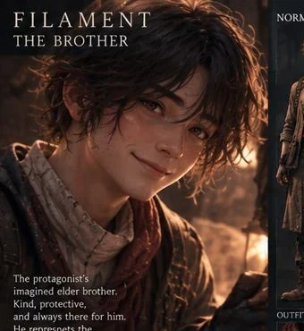
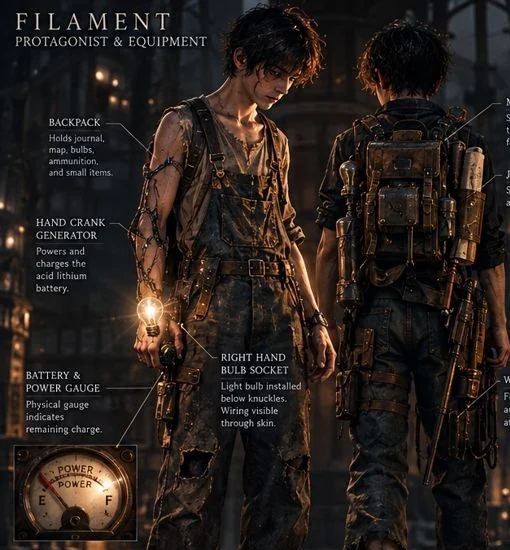
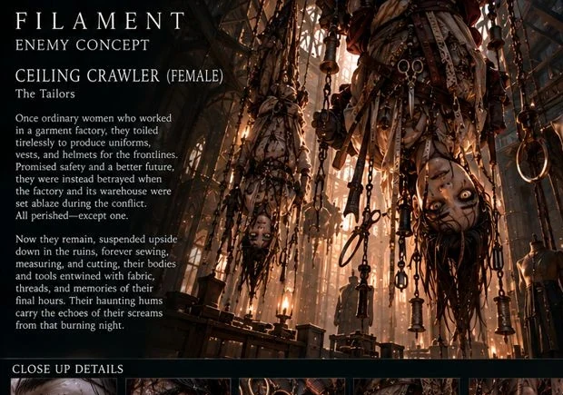
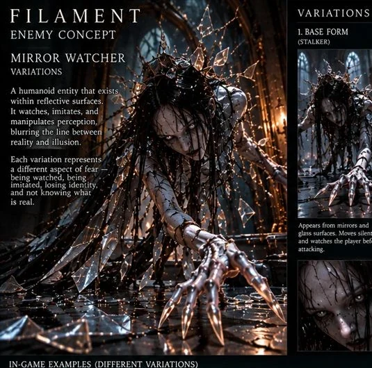

THE CITY WAS BEAUTIFUL
It took decades to destroy what generations had built. Rebuilding the buildings proved easier than rebuilding trust.
PUBLIC / WORLD HISTORYRecovered visual studies, developmental ideas, field notes and traces of a story that cannot be told all at once.
Original design-bible concept artwork. Some images depict exploratory directions and should not be interpreted as approved final game assets.











Short glimpses into the narrative's themes, written as atmospheric teasers. The central revelations remain sealed.
It took decades to destroy what generations had built. Rebuilding the buildings proved easier than rebuilding trust.
PUBLIC / WORLD HISTORYThe child placement program promised protection for displaced children. The paperwork tells only part of the story.
PUBLIC / INSTITUTIONAL HISTORYThe light, the moths, the sound of a familiar voice. Sometimes a memory is enough to make the next step possible.
PUBLIC / NARRATIVE THEMESThe locked file contains major revelations and ending details from the story bible. Open only if you want to see behind the game's central mysteries.